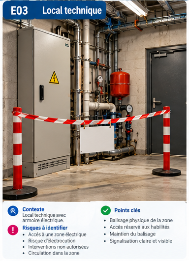
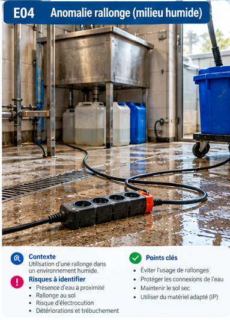
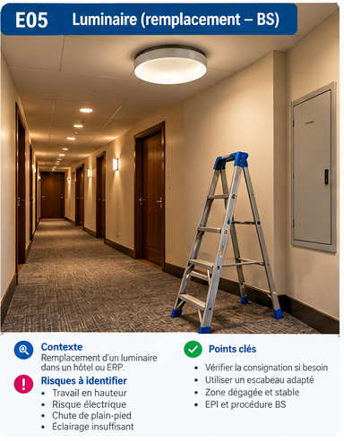
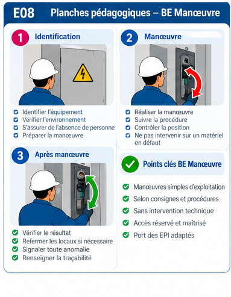
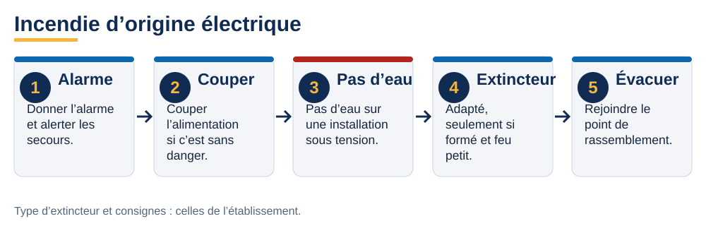

Scènes à analyser, schémas et planches de la session. Cliquez sur un visuel pour l’agrandir, puis naviguez avec les flèches.
Ces visuels illustrent un propos : installations fictives, sans échelle. Ils ne représentent aucune installation du client, ne désignent aucun matériel agréé et ne remplacent ni une notice ni une prescription du site. Les scènes E01 à E08 sont des illustrations générées : leur résolution est limitée et le texte des planches peut être flou.
E02 · Quai et environnement marin — Humidité, sel, câbles au sol, capots.

E03 · Local technique — Zone électrique balisée, accès réservé.

E04 · Rallonge dans un environnement humide — Rallonge au sol, eau, trébuchement.

E05 · Luminaire dans un couloir — Travail en hauteur, escabeau, éclairage.E06 · Zone de lavage — Projections d’eau, enrouleur, sol humide.

E08 · Planche BE Manœuvre — Identification, manœuvre, après la manœuvre.
Schémas de la session
F05 · Du titre à la tâche — La formation donne un avis ; l’employeur délivre le titre.F06 · Domaines de tension — TBT, BT, HT en alternatif.F01 · Accident électrique : les quatre réflexes — Couper, dégager, alerter, secourir.

F02 · Incendie d’origine électrique — Cinq réflexes, pas d’eau sur une installation sous tension.F03 · BS : les six temps — Analyser, séparer, condamner, vérifier, remplacer, terminer.F04 · BE Manœuvre : réarmer, oui, insister, non — Un déclenchement répété signale un défaut.V22 · Contact direct et contact indirect — Deux mécanismes de choc électrique.V21 · Défaut d’isolement : danger de contact indirect — Schéma de défaut, sans simulation de geste.V09 · Voisinage : supprimer l’exposition d’abord — Sans échelle : aucune distance déduite de l’image.V10 · EPI : partir de l’analyse de l’opération — Le symbole ne suffit pas à choisir les protections.V05 · VAT et mesurage : objectifs distincts — Une indication chiffrée seule ne prouve pas l’absence de tension.V24 · VAT : contrôler aussi le vérificateur — Avant et après la vérification.V02 · Cartographier toutes les alimentations — Les flèches représentent des dépendances, pas des conducteurs.
Planches et illustrations
Équipements de protection (illustration) — Objets illustrés sans performance attestée : ce n’est pas un kit universel.Vérificateur bipolaire (illustration) — La fonction VAT n’est pas la fonction de mesurage.Choisir les protections à partir des risques — Le symbole d’habilitation ne détermine pas seul les EPI.Vérification d’absence de tension — La VAT et le mesurage ont des objectifs distincts.
V01 · B2V, BR, BC : trois missions — Choisir le rôle avant de choisir le geste.V03 · Consignation : repères et points d’arrêt — Reconnaître les étapes sans confondre arrêt et consignation.V04 · Un cadenas ne prouve pas toute la consignation — Distinguer objet visible et état de sécurité démontré.V12 · Consignation pour des travaux : coordination — Organiser la transmission du périmètre et la restitution.V13 · BR : rester dans l’intervention confiée — Qualifier l’activité sans attribuer tout dépannage au seul métier.V15 · Avant remise en service : une décision organisée — Traiter les interfaces humaines avant le redémarrage.V18 · Cadrer l’opération avant de commencer — Structurer l’analyse préalable sans produire un permis de travail fictif.V19 · Moteur triphasé : séparation et masse — Lire les trois phases, la séparation multipolaire et la liaison à la masse.V20 · Deux alimentations dans une armoire — Une même enveloppe peut contenir des circuits d’origines différentes.B2V · BR · BC : trois missions — Trois missions à distinguer avant toute opération.Consignation électrique : repères — La procédure dépend de l’installation.